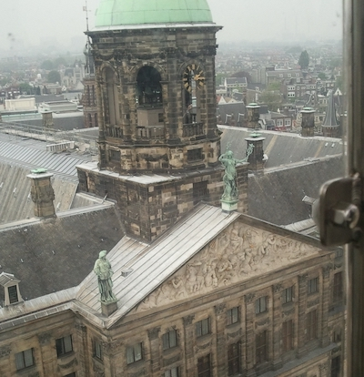

Activities
May the 5th has been marked as the Liberation Day of The Netherlands. On this day the Dutch celebrate the ending of World War 2, when the Germans finally put an end to it.
The Concert of May the 5th
As one would say, this day has to be celebrated, with love and together. And in Amsterdam there are lots of activities planned on this day.
€ 39,50 - 50Buy your ticket here.
Date: 5 May
Address: Magere Brug, 1018 EG Amsterdam
From Central station, you can travel with metro 51, 53, 54 to the stop Waterlooplein. From there, it will be a six minute walk to the Magere brug.